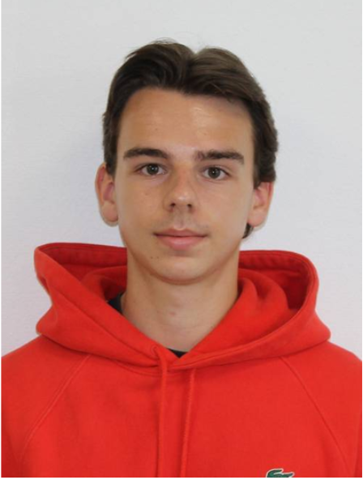
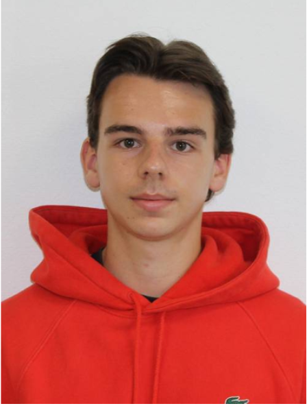

Nouveautés
Création du menu
Ce menu est constitué de 3 boutons : le bouton “PLAY” qui permet au joueur de lancer une partie. Le bouton “QUIT” qui permet au joueur de quitter le jeu. Le bouton “OPTIONS” qui permet d’accéder aux réglages afin de changer différents paramètres pour améliorer confort de chaque joueur.
Multijoueur
Pour l'implémentation du mode multijoueur nous avons décidé d'utiliser "Mirror". Cette solution met à disposition de nombreux scripts à rattacher aux éléments, nécessitant peu ou pas de code pour permettre la connexion entre deux joueurs à une adresse.
HUD
L'HUD est l'ensemble des informations utile au joueur affiché en périphérie du centre de l’écran.
Une barre représentant la vie du joueur est actuellement présente ainsi que le nombre de munitions et la vague actuelle.


 
